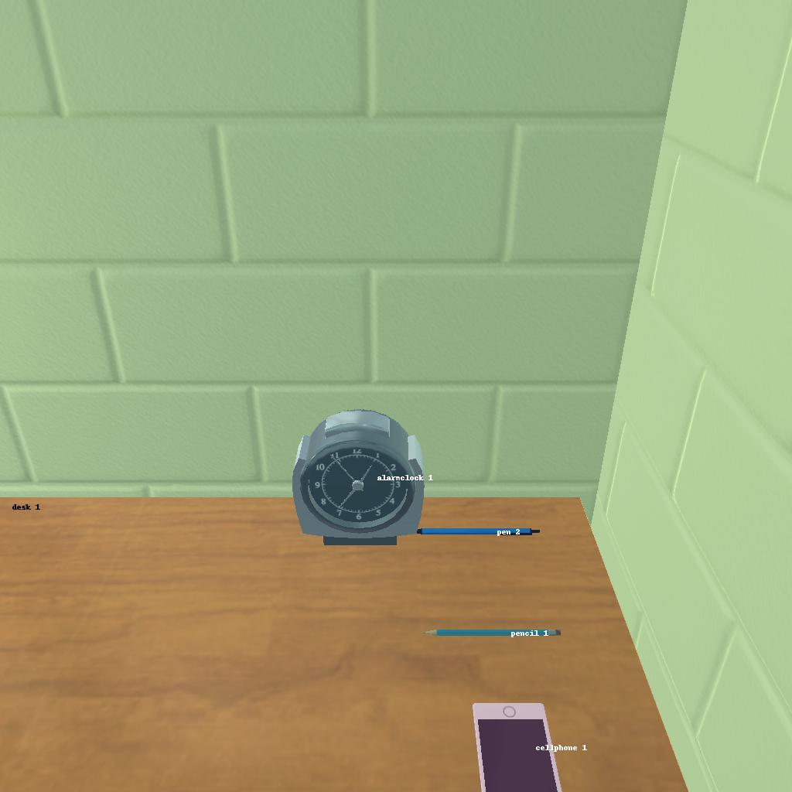

---------------------------------------------------------task: 8---------------------------------------------------------
--------------------------------------------------------------------------------------------------------------------------------------------------------------------
--------------------------------------------------------------------------------------------------------------------------------------------------------------------
Step:--------------------------------------------------------------------------4-------------------------------------------------------------------------------
----------------------------------------
VLM Prompt:
Image1:
Image2:
Image3:
**Instruction**
1. Analyze the provided image to identify all visible household objects, focusing on those relevant to the task description "put some laptop on desk."
2. Use the analysis of the image and the task hint "The agent must find an object of the desired type, pick it up, find the correct location to place it, and put it down there." to answer the question: what is the most reasonable action in the choices for the task description "put some laptop on desk"?
4. Decide and write the answer using the template: The answer is: (i): , where i is the real number. If there is no desired object in the image, search every place based on **Initial Observation** to find the object. And if no one is exactly correct, choose a similar answer.
**Initial Observation**
You are in the middle of a room. Looking quickly around you, you can see bed (1), garbagecan (1), desk (1), sidetable (1), drawer (1-5), laundryhamper (1)
**Answer Choices**
(1): go to bed 1
(2): go to garbagecan 1
(3): go to sidetable 1
(4): go to drawer 1
(5): go to laundryhamper 1
(6): go to drawer 3
(7): go to drawer 4
(8): go to drawer 5
(9): open drawer 2
(10): close drawer 2
(11): examine drawer 2
**Answer**
Let's think step by step by following the instructions.
----------------------------------------
----------------------------------------
Original Response:
First, analyze the provided images. Image 1 and Image 2 show a desk with an alarm clock, pens, a pencil, and a cellphone. There is no laptop visible on the desk or in the immediate surrounding area. Image 3 shows a sidetable with a book and a pen, and a mirror reflecting a bed with a panda plush on it. There is no laptop visible on the sidetable or in the reflection.
Based on the Initial Observation, there are several other places to search for the laptop: bed, garbagecan, sidetable, drawer, and laundry hamper. Since we have already seen the sidetable in Image 3 and it does not have a laptop, we can rule out choice (3). The task description "put some laptop on desk" implies that we first need to find the laptop. The most logical places to look for a laptop would be in drawers, as they are common storage spaces for such items.
Therefore, the most reasonable action from the choices to find the laptop would be to go to one of the unopened drawers. Since choices (4), (6), (7), and (8) are all actions to go to drawers and we have no information suggesting which drawer is more likely to contain the laptop, we should start with the first unmentioned drawer, which is drawer 3.
The answer is: (6): go to drawer 3.
----------------------------------------
----------------------------------------
>>> Refine Original VLM Response and Get Pure Action: go to drawer 3
----------------------------------------
-----------------------------------------------------------------
Running time: 11.204612731933594 seconds
Total Money: 4.45812
-----------------------------------------------------------------
-----------------------------------------------------------------
Text Observation:You arrive at loc 7. The drawer 3 is closed.
-----------------------------------------------------------------
UNSUCCEED